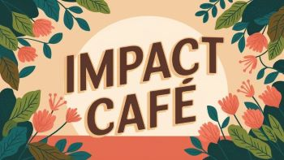
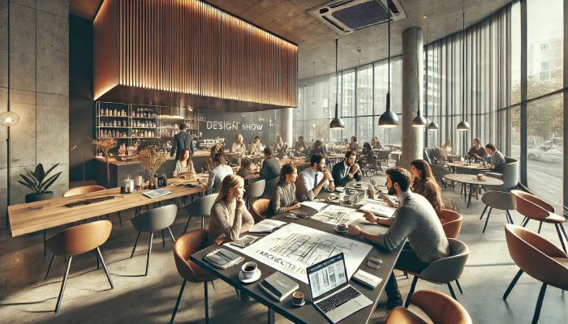

Impact Cafés: conversations designed to inform action.

V-Impact envisions welcoming online and in-person gatherings where people examine the platform, contribute lived experience, and develop proposals grounded in Conscious Progress.
No Café dates, host guide, community agreement, accessibility plan, or public process for recording outcomes is currently published.

No events are currently scheduled.
No events are currently published.
Subscribe on V-Impact’s external Substack for announcements, or visit the externally hosted forum. A host guide, accessibility details, community agreement, and public record of Café outcomes have not yet been published.